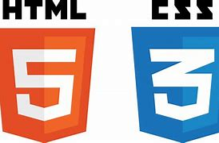

Todo desarrollador web debe poseer una fuente de recursos y herramientas que le permita trabajar con mayor fluidez y eficiencia
Estandares
- La W3C en español
- La W3C en ingles
www.w3c.es
Tutoriales
- HTML 4 español
http://html.conclase.net/w3c/html401-3s/cover.html
- CSS 2.0 es español
http://www.sidar.org/recur/desdi/traduc/es/css/cover.html#minitoc
- Diccionario sobre HTML 5
https://www.imaginanet.com/diccionario-html5.html
- Guia de referencia de CSS3
Validadores
- Validador de la W3C
